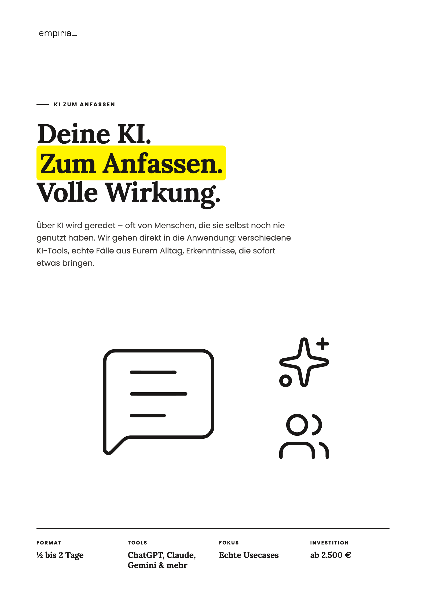
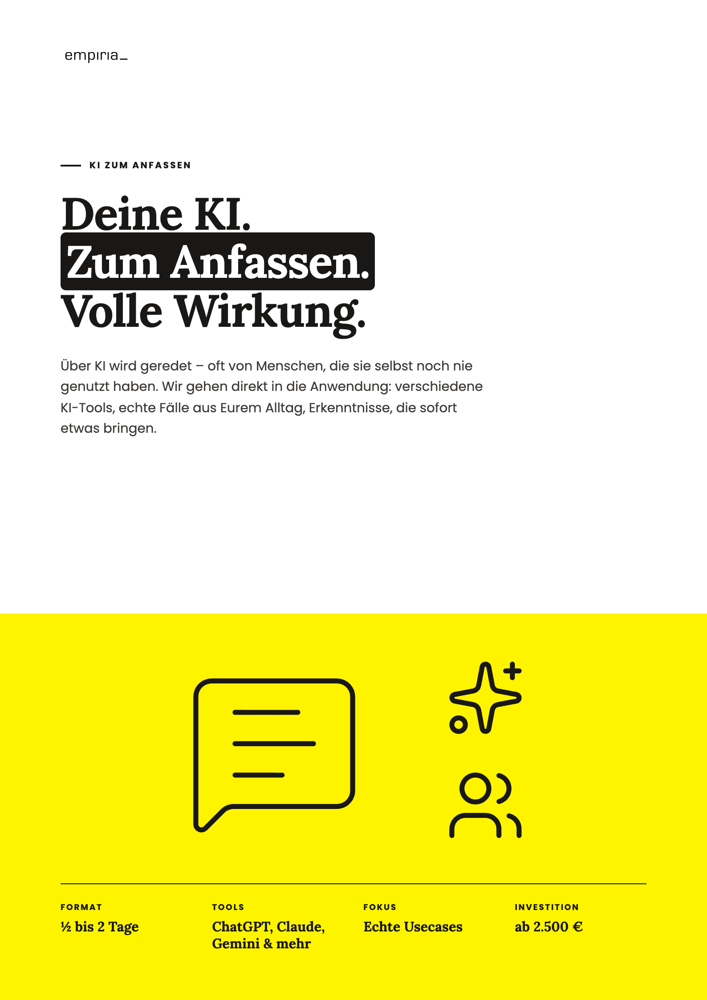
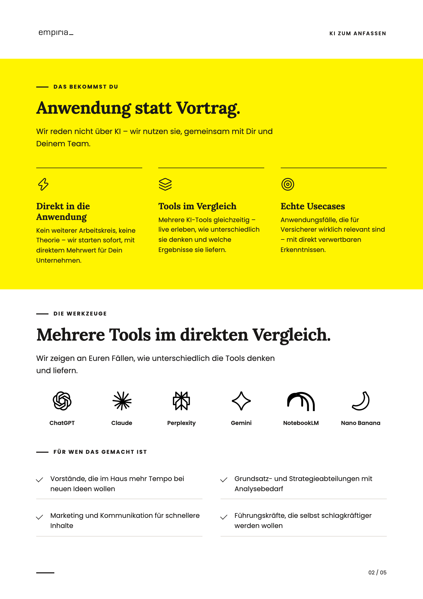
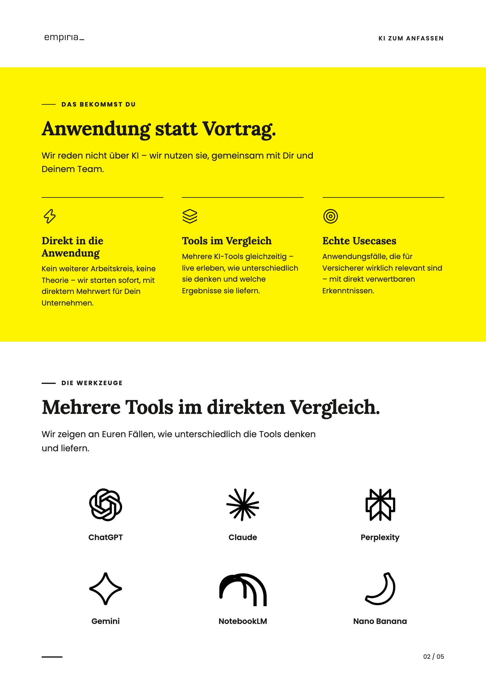
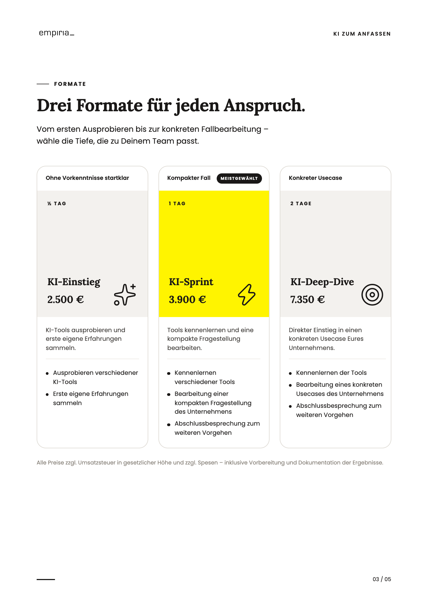
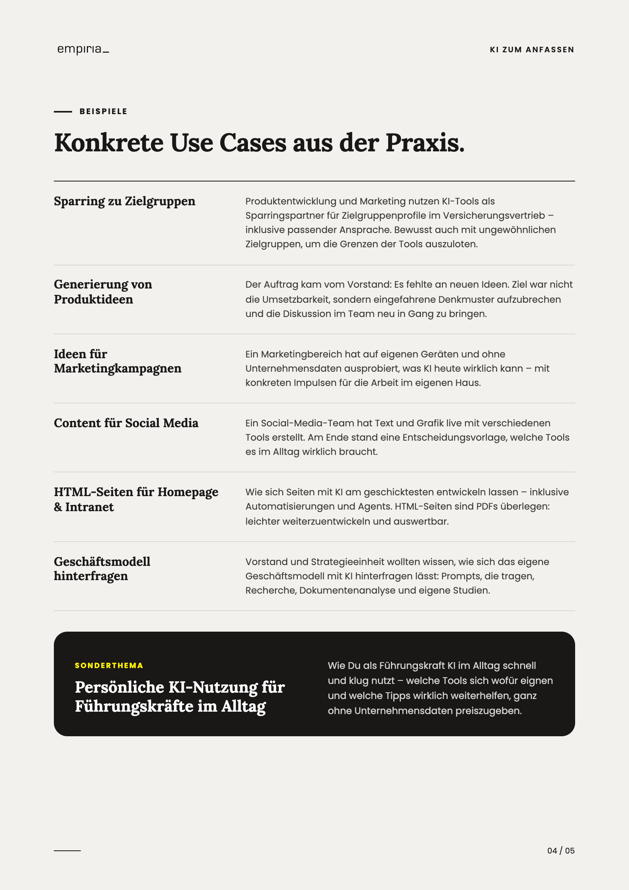
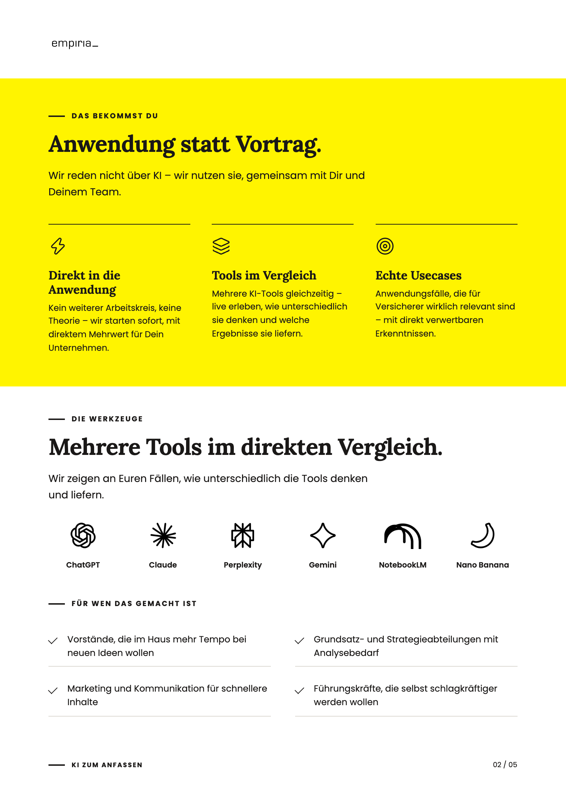

PDF-Muster · KI zum Anfassen
Varianten im Vergleich
Links die jetzige Fassung (A), rechts die Alternative (B). Bild anklicken = groß ansehen.
1 · Titelseite
A A: Bild auf Weiß, Fakten unten.
B B: unteres Drittel gelb – Bild und Fakten im Band, Highlight schwarz.
2 · Seite „Das bekommst Du“
A A: Band + Werkzeuge + „Für wen“ (drei Themen).
B B: nur Band + Werkzeuge, Logos größer, „Für wen“ raus.
3 · Formate: Karten oder Tabelle
4 · Schwarzer Kasten „In jedem Format enthalten“
A A: mit Kasten.
B B: ohne Kasten, Karten luftiger.
5 · Beispiele
A A: sechs Kacheln mit Kurzsatz.
B B: Liste mit Titel links und zwei Sätzen rechts.
7 · Kopf und Fuß (alle Seiten)
A A: oben Logo + Thema, unten Strich + Seitenzahl.
B B: oben nur Logo, unten Thema + Seitenzahl.